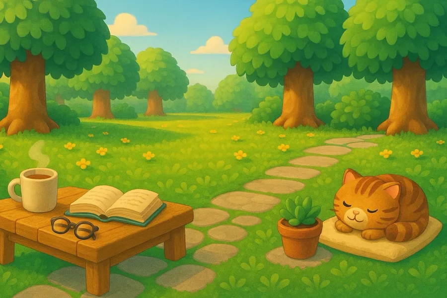
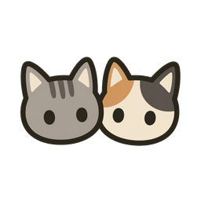
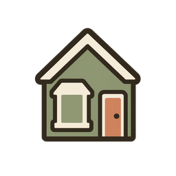
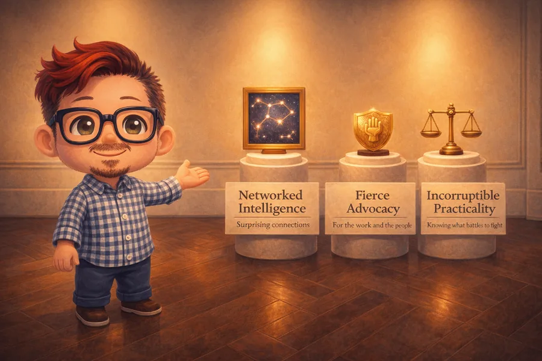
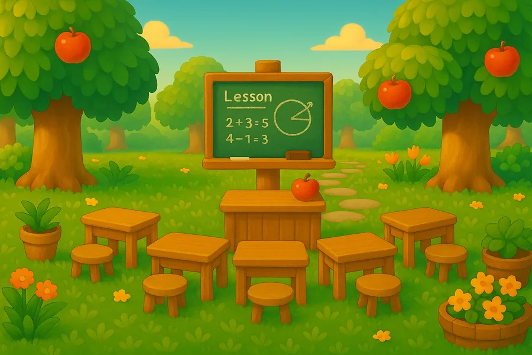
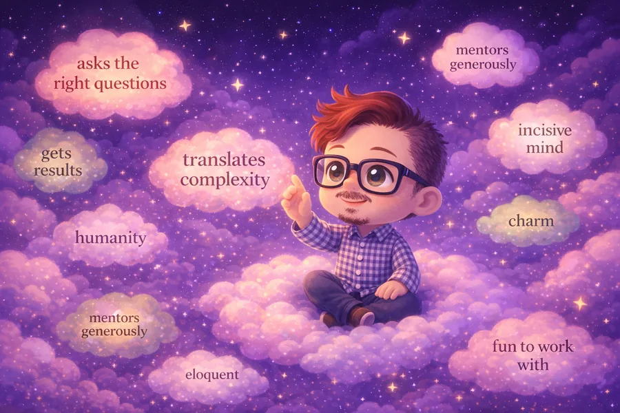
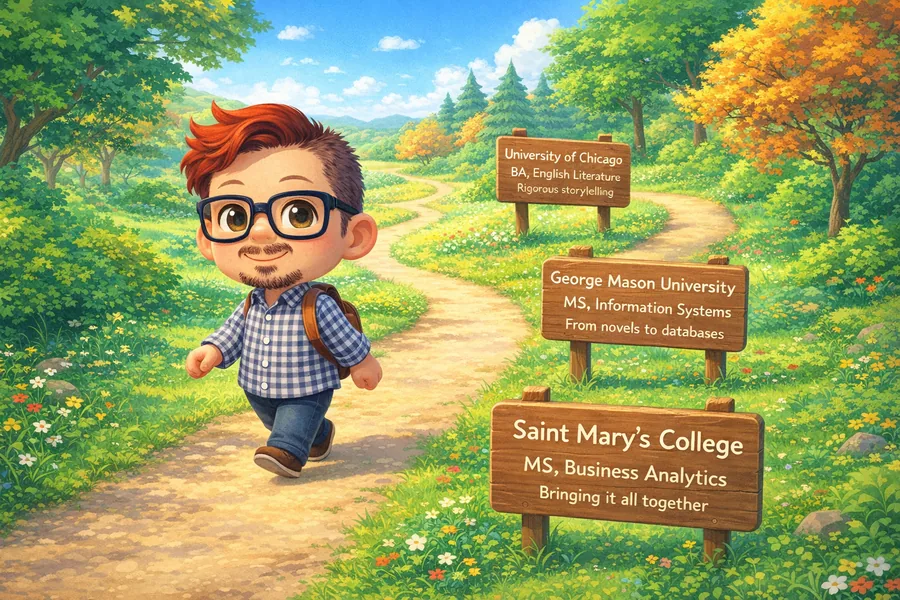

The Human Behind the Projects
personal portrait

I specialize in ferals. Patience, consistency, and a safe environment make all the difference — for cats and people both.
No contest.
University of Chicago. Structure, voice, audience — I've been thinking about how to make complexity legible ever since.

Making its transit better by day. Finding its hidden public gardens on the weekend. Proud to live and work here.
Three Things I Always Bring
as described by Mary Salome, a longtime friend and collaborator
The ability to stay involved in what's happening in the world, especially in areas that matter — and bring sharp analysis to conversations. Going deep very quickly. Making connections across a wide range of topics. From the outside: a mind that is part of a whole being, involving a lot of heart, and very fast.
Standing up for people worth standing up for, and for what you believe in. Knowing what can't be compromised — and being able to say it even when it's a little scary. Extremely generous with the people and animals around you.
Moving forward in a world that doesn't have you in mind — in a way that is both completely honest and also accounts for the fact that some structures will take time to dismantle. Finding your way to be true to yourself while picking your battles. A survivor, who survives to keep using networked intelligence and fierce advocacy for good.
One More Thing
teaching
While earning my MS in Business Analytics, I ended up becoming as much a teacher as a student. Cohort members would find me before exams, after lectures, in the spaces between — not because I had all the answers, but because I had a way of re-asking the question until the concept clicked. That teaching instinct kept me close to the Saint Mary's cohort for four years, from first-year student to the person others kept coming back to. Separately, I consulted for community-based nonprofits — using Python, Tableau, and storytelling to help organizations that needed insights but didn't have the resources to hire a full analytics team. That instinct — translating complexity until it lands — is the same one I bring to every project.
Off the Clock
the other writing lifeOff the clock, I'm a fanatical reader — and writer — of feminist science fiction. The instinct that makes someone walk into an org and ask "why do we do it this way?" is, I think, the same one that draws me to a genre that takes the world apart and rebuilds it on different assumptions. Octavia, the cat, is named for Octavia E. Butler. Samuel R. Delany lives on the nightstand. The drafts live in a different folder than the dashboards — one of them was nominated for the Tiptree Award.
What People Say
in their words
Education & Certifications
background